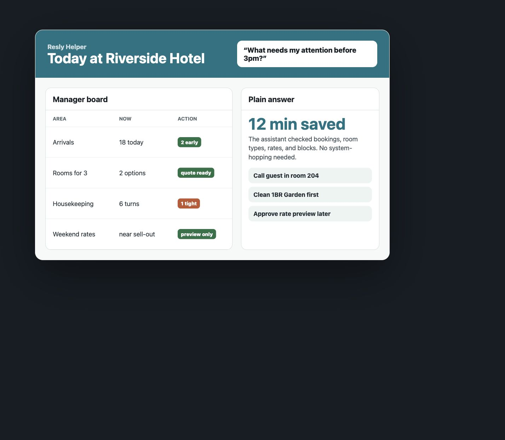

Available rooms
Ask what is free for a date, party size, or room type before quoting a guest.

For busy hotel managers
Check rooms, bookings, prices, and daily problems without opening five screens or waiting for someone else.
The problem
A guest calls. Housekeeping needs priorities. Rates look wrong. A booking changed. The answer is usually in Resly, but staff still have to click around, compare screens, or ask someone else.
What it helps with
Ask what is free for a date, party size, or room type before quoting a guest.
See arrivals, departures, room turns, and anything that may slow down check-in.
Review current prices and prepare safe rate changes for busy nights.
A normal day
Get a short list of arrivals, departures, tight rooms, and booking changes.
Ask if a room is available for 3 people and what price to quote.
See which rooms should be cleaned first because guests arrive soon.
Preview a rate change and approve it only after a human checks it.
Built for low tech teams
Claude or Codex can check the right details in the background. The manager sees a simple answer, a short action list, and a clear approval step for anything that changes live data.
See how chat worksNo confusing menus or system language for the manager.
The answer can explain which bookings, rooms, and rates it checked.
Bookings are not deleted. Rate changes need a human approval step.